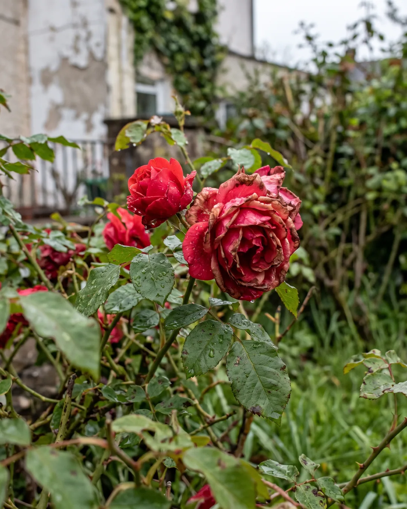

Caso n.º 16 · Flores
Sobre este caso
El caso n.º 16 está cerrado. Fue el caso diario del 16 de noviembre de 2026 y su tema fue Flores. Los detectives de aquel día tuvieron dos retos: cinco imágenes que clasificar en fotografías reales y generadas por IA, y cinco afirmaciones de una frase que clasificar en datos y bulos.
- Imágenes generadas por IA: 2 de 5
- Bulos: 2 de 5
Aquí tienes todas las respuestas. Cada imagen generada por IA trae el prompt que la creó, y cada afirmación, la verdad que hay detrás y los detalles que merece la pena recordar, para que compruebes qué se te escapó.
Uno de los bulos: «Los girasoles, además de girar según la luz solar, también lo hacen según el ruido.» La verdad: Los girasoles no giran hacia el sonido; su movimiento diario lo guían la luz y su reloj interno.
¿Quieres afinar la vista? Lee nuestra guía para detectar imágenes de IA o nuestra guía para detectar un bulo y luego juega el caso de hoy.
Imágenes
-
Imagen 1

REAL
Fotografía real
-
Imagen 2
REAL
Fotografía real
-
Imagen 3

IA
La confesión del sospechoso
Un rosal en el jardín de una casa después de llover, con gotas en los pétalos y alguna rosa ya marchita o con bordes pardos; luz de cielo nublado, colores naturales.
-
Imagen 4

IA
La confesión del sospechoso
Unas amapolas al borde de un camino de tierra en primavera, fotografiadas a ras de suelo con un 50 mm a f/2.8; una en foco, las demás desenfocadas, y hierbas secas cruzando el primer plano.
-
Imagen 5
REAL
Fotografía real
¿Dato o Bulo?
-
Afirmación 1
BULO «Los girasoles, además de girar según la luz solar, también lo hacen según el ruido.»
Los girasoles no giran hacia el sonido; su movimiento diario lo guían la luz y su reloj interno.
- Ese movimiento diario de este a oeste se llama heliotropismo.
- No hay evidencia científica de que los girasoles reaccionen al ruido.
-
Afirmación 2
DATO «La flor individual más pesada del mundo puede llegar a los 11 kg de peso.»
La Rafflesia arnoldii, de las selvas de Sumatra y Borneo, puede pesar unos 11 kg.
- Puede medir hasta 1 m de diámetro.
- No tiene hojas, tallos ni raíces visibles.
- Huele a carne podrida para atraer a las moscas carroñeras que la polinizan.
-
Afirmación 3
BULO «En Noruega se usan flores bioluminiscentes para iluminar aceras sin consumir electricidad.»
Ningún país ilumina sus calles con flores; los caminos que brillan usan materiales sin vida.
- Polonia y los Países Bajos tienen carriles bici con piedras fosforescentes.
- Las piedras se cargan con luz solar de día y brillan de noche.
-
Afirmación 4
DATO «Se considera que la primera burbuja especulativa de la historia se debió a unos tulipanes.»
La tulipomanía de los Países Bajos alcanzó su pico hacia 1637: los bulbos se dispararon de precio y luego se hundieron.
- Los colores exóticos, causados por un virus, encarecían algunos bulbos.
- En el pico, se dice que un bulbo llegó a costar como una gran casa de Ámsterdam.
-
Afirmación 5
DATO «Existe una planta que tarda entre 80 y 100 años en madurar y florece una sola vez en su vida.»
La Puya raimondii, la «Reina de los Andes» de Perú y Bolivia, florece una vez y después muere.
- Su gigantesca espiga floral puede superar los 10 m de altura.
- Suelta sus semillas antes de morir.